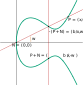

Double-Odd Elliptic Curves
Double-odd elliptic curves are a large subset of elliptic curves: these are curves whose order is equal to 2 modulo 4 (i.e. the order is the double of an odd integer). On top of double-odd elliptic curves, we can define a prime order group suitable for building cryptographic protocols. This is similar to what Ristretto achieves for twisted Edwards curves, albeit with a different method. Some highlights of double-odd elliptic curves are:
-
There is no cofactor to deal with. A clean prime order group abstraction is provided, with a canonical encoding for elements which is automatically verified when decoding.
-
The encoding is economical: for \(n\)-bit security, group elements are encoded over \(2n+1\) bits (compared to \(2n+3\) for Ristretto).
-
All group operations are supported by unified and complete formulas amenable to efficient and secure (constant-time) implementations.
-
No drastically new cryptographic hypothesis is introduced. Double-odd elliptic curves are fairly mundane; about 1/4th of all elliptic curves are double-odd curves. Such curves are considered secure for cryptography, just like any other random elliptic curve with a large enough subgroup of prime order.
-
The formulas are fast and provide performance at least on par with twisted Edwards curves. In some respects they are faster; e.g. point doublings can be performed, for half of double-odd curves, with six multiplications (down to 1M+5S for some specific curves).
In order to leverage these techniques, two specific double-odd elliptic curves, on which we define the prime-order groups jq255e and jq255s (the original version of this work defined the do255e and do255s; the "jq" groups are algebraically identical, but use a different encoding process). Both provide "128-bit security" (technically, 127 bits); jq255e is a GLV curve that can leverage an internal endomorphism for further improved performance, while jq255s is a perfectly ordinary curve.
(New: 2022-08-13) The original do255e and do255s have been reinterpreted into a subcase of Jacobi quartics, from which we obtain the new groups jq255e and jq255s (same groups as previously but a different encoding format). They have faster formulas and in particular a better encoding and decoding (as efficient as plain Ed25519 point compression). On top of jq255e and jq255s, we define short signatures of length 48 bytes, noticeably shorter than the usual 64-byte signatures of Ed25519 or P-256/ECDSA; this also makes signature verification faster, down to about 93000 cycles on a 64-bit x86 system (Coffee Lake core).
Resources
The original whitepaper contains all the formulas and demonstrations; it also specifies the use of do255e and do255s in higher-level cryptographic functionalities (key pair generation, key exchange, signature, and hash-to-curve). The additional whitepaper presents the reinterpretation of double-odd curves as Jacobi quartics, leading to the jq255e and jq255s groups, and new specifications of the higher-level cryptographic schemes, in particular short signatures.
Note: both the original whitepaper and the additional whitepapers are also published on ePrint:
Several implementations of jq255e, jq255s, do255e and do255s exist and are listed in the implementations section.
Outline
Subsequent pages in this site include the following:
-
A geometrical introduction to double-odd elliptic curves: a self-contained explanatory text (with pictures) to explain the motivation and the core ideas of this work.
-
(New: 2022-08-13) Double-odd Jacobi quartics presents the reinterpretation of double-odd curves as a special case of Jacobi quartics, which leads to faster formulas and an improved decoding process.
-
(New: 2022-08-13) The short signatures describes the signature scheme specified on the jq255e and jq255s groups, i.e. the double-odd curves interpreted as Jacobi quartics. This scheme makes signature substantially shorter (48 bytes instead of 64), and also speeds up signature verification.
-
The formulas section lists useful formulas for computing over points of double-odd elliptic curves with several convenient systems of coordinates.
-
Explicit curve choices are listed: these are curves do255e/jq255e and do255s/jq255s. Selection criteria and curve parameters are provided.
-
Some benchmarks on large (x86) and small (ARM Cortex M0+ and M4) architectures are detailed.
-
Available open-source implementations are listed.
About
Double-odd elliptic curves were designed by Thomas Pornin, who also wrote this Web site, with contributions from Paul Bottinelli, Gérald Doussot and Eric Schorn.
A Geometrical Introduction to Double-Odd Elliptic Curves
To give an intuition about double-odd elliptic curves, why we use them and how we leverage their structure, we present here a geometrical interpretation.
For use in cryptography, we work over a finite field \(\mathbb{F}_q\) of order \(q\), typically integers modulo a given prime. All we explain here also works over field extensions, in which case \(q\) is a given power of a prime integer (called the field characteristic). The only restriction is that the characteristic should not be 2 or 3 (elliptic curves over such fields use different equations and rules). However, finite field are not very visual; the pictures below pretend that we are using real numbers, where there are such things as continuous functions. These pictures are still useful in getting used to the underlying ideas.
Motivation
Short Weierstraß Curves
Let's start with a classic "short Weierstraß" curve and the definition of point addition, as show below.

The curve here is the set of points \(x, y\) that fulfill the curve equation \(y^2 = x^3 + Ax + B\) for two given constants \(A\) and \(B\) that define the curve shape. As is well-known, every elliptic curve can be converted into that kind of shape and equation with appropriate changes of variables.
Point addition is defined as follows:
-
The neutral element is the formal extra "point-at-infinity" (which is not in the plane and does not have coordinates).
-
For a point \(P\), the point \(-P\) is the symmetric of the point relatively to the horizontal axis.
-
When adding two points \(P\) and \(Q\) together, the line \((PQ)\) is drawn; it intersects the curve in a third point which is \(-(P+Q)\), i.e. the opposite of the sum of \(P\) and \(Q\).
This is illustrated by the red lines on the figure. Given the coordinates of \(P\) and \(Q\), the coordinates of \(P+Q\) can be computed as rational functions of \(P\) and \(Q\), with coefficients that depend only on the curve parameters. Unfortunately, this process has exceptional cases which must be handled differently:
-
The point-at-infinity does not have defined coordinates, so it can be hard to apply rational functions on these non-existing coordinates.
-
When \(P = -Q\), the line is vertical \((PQ)\) and the third intersection point is "at infinity", again with no defined coordinates.
-
When \(P = Q\) (i.e. a point doubling), the line \((PQ)\) is not well-defined; if we apply the rational functions that compute point addition in general, we end up dividing zero by zero. Instead, we have to use the tangent to the curve on \(P\), and this leads to different rational functions to obtain the result.
These exceptional cases are mightily inconvenient. The point-at-infinity can somehow be handled by switching to fractional coordinates, in which each coordinate is represented by a fraction. In that case, infinity corresponds to a denominator value of zero. There are several well-known systems of coordinates that use fractions, e.g. projective coordinates (\((x, y) = (X/Z, Y/Z)\)) or Jacobian coordinates (\((x, y) = (X/Z^2, Y/Z^3)\)). Formulas working on fractional coordinates can be established, that will handle infinities, and have the added benefit of allowing most computations to be done only with additions, subtractions and multiplications, and no divisions. A single division will be needed only at the end of a long computation, usually for encoding a point into a well-defined sequence of bytes. This promotes performance, because divisions are more expensive than multiplications. The cost of formulas is thus often expressed as a number of multiplications; it is common practice to separate general multiplications from squarings, the latter being usually somewhat faster than multiplications.
Handling the exceptional case related to point doublings is harder. This case can be detected with a simple test, but this leads to conditional execution, i.e. non constant-time behaviour, which is unsafe in all generality (timing attacks will detect that occurrence which may lead to information leaks). In general, one can apply both formulas, for general addition and for doubling, and select the right one afterwards in a constant-time way, but this is expensive. Complete formulas that do not have exceptional cases, in projective coordinates, have been published; they allow safe implementations of any curve (of odd order), but at a cost: each point addition requires 12 multiplications in the field (12M), while specialized doubling formulas (when the two operands are statically known to be the same point) need 8 multiplications and 3 squarings (8M+3S). If we forego completeness, Jacobian coordinates lead to more efficient formulas (especially doublings, in cost 3M+5S), but analysis becomes a lot harder because we must prove that no exceptional case may be inadvertently reached when using incomplete formulas. This can lead, and has led, to exploitable vulnerabilities.
Apart from this tension between performance and safety, short Weierstraß curves can have nice characteristics:
-
The order of a curve is close to that of the field, but can be about any integer in a range centered on that value, so that we may choose curves with a prime order. Higher-level cryptographic functionalities building on elliptic curves usually need a prime order group.
-
With point compression, elements of a curve with \(2n\) points and offering "\(n\)-bit security" can be encoded over \(2n+1\) bits. This is the best one can realistically hope for with elliptic curves.
Twisted Edwards Curves and Montgomery Curves

Twisted Edwards curves use a different kind of polynomial equation (of degree 4) that leads to the shape shown here; the point addition rule is somewhat different and harder to represent on a picture (I won't try). They are still elliptic curves, though, and therefore they can be turned into a Weierstraß curves with a birational transform on coordinates. As Weierstraß curves, twisted Edwards curves become Montgomery curves (which were historically discovered before Edwards curves). A well-known Montgomery curve is Curve25519 (defined over the field of integers modulo \(2^{255}-19\)) and its twisted Edwards counterpart is called Edwards25519. The Ed25519 signature algorithm uses Edwards25519, while the X25519 key exchange algorithm works over Curve25519. From a security point of view, they are the same curve.
The most interesting aspect of twisted Edwards curves is that point addition can be expressed with formulas that have no exceptional cases, and these formulas are substantially more efficient than the ones for short Weierstraß curves (8M for general point addition, 4M+4S for point doubling).
They have, however, a drawback, which is the cofactor. A twisted Edwards curve cannot have prime order, since its order is always a multiple of 4. The ratio between the curve order and the prime order of the subgroup which is relevant to cryptographic applications is called the cofactor. The cofactor for Edwards25519 is 8. The cofactor tends to be a nuisance for cryptographic protocols, because it allows the existence of several "equivalent" points that still look different from each other on the wire. This can lead to several issues, e.g.:
-
The cofactor induces public key malleability, which was exploited in a double-spend attack on the Monero cryptocurrency.
-
Several equations are possible to validate Ed25519 signatures, and while they have equivalent security, they imply that it is possible to (maliciously) make signatures that will be accepted by some verifiers, and rejected by others. This tends to break consensus-based distributed applications.
For more cases and extensive analysis, see this report from Cramer and Jackson. The gist of it is simple: we need a prime order group. When using a curve with a non-trivial cofactor, the low-order points and the malleability may require some corrective actions, which is usually a generous sprinkling of multiplications by the cofactor in various place of the upper protocol, and explicit detection of the few points whose order is a divisor of the cofactor. Even when such mitigations are not required, some extensive and non-obvious analysis is needed to ascertain this fact. In that sense, a lot of the apparent simplicity of use of twisted Edwards curves has been obtained not by removal of complexity, but by moving it into upper layers of the overal protocol design.
Decaf and Ristretto
Decaf and Ristretto are an almost perfect solution to the cofactor issues with twisted Edwards curves. They are applicable to such curves when the cofactor is exactly 4 (for Decaf) or 8 (for Ristretto). With Decaf/Ristretto, what you decode is a point on the twisted Edwards curve, which is not necessarily a member of the prime order subgroup on that curve. However, all points that differ from each other by only a low order point will encode to the same sequence of bits, and any two points that encode to a given sequence of bits differ from each other by only a low order point. This leverages all the performance and completeness of formulas on twisted Edwards curves, but provides the required abstraction for building higher-level cryptographic functionalities: a prime order group with a canonical and verified encoding.
There are a few remaining points where Decaf/Ristretto is suboptimal:
-
The decoding and encoding processes both use an inverse square root in the field, which is implemented with a modular exponentiation, with a non-negligible cost. Ordinary twisted Edwards curves, and short Weierstraß curves, also need a square root for decoding (when using a compressed encoding format), but for encoding they "only" need an inversion. Inversion is traditionally implemented with Fermat's little theorem, i.e. another exponentiation, but faster methods exist. Decaf and Ristretto cannot leverage that.
-
The cofactor still requires some space: for \(n\)-bit security, the curve must work over a field of size \(2n+2\) bits (for Decaf) or \(2n+3\) bits (for Ristretto), leading to the same size requirement for encoding.
And, more generally, while the currently known formulas for twisted Edwards curves are fast, nothing proves that one cannot be better.
Double-Odd Elliptic Curves
Enter double-odd elliptic curves. This started with a question: since short Weierstraß curves can have prime order, but Montgomery/Edwards curves have cofactor at least 4, what of the "intermediate" curves with cofactor 2? Is there anything that can be done with them?
It turns out that such curves, which we named double-odd elliptic curves, have interesting properties that help in both finding a canonical encoding for a prime order group (in a way similar to Ristretto) while also giving options for unified and complete formulas. It so happens that the resulting formulas are also quite fast, in particular with regard to computing point doublings -- and point doublings tend to represent the large majority of the cost of point multiplication by a scalar, so any gains in that area are most welcome.
Curve Equation and Point Encoding
Let's consider a curve \(E\) with order \(2r\) for some odd integer \(r\) (in practice, we'll choose a curve such that \(r\) is prime).

A double-odd curve necessarily has a single point of order 2, i.e. a point which, added to itself, yields the point-at-infinity. Equivalently, points or order 2 are points with \(y = 0\). Let's call that point \(N\).
With a simple change of variable (adding a constant to the \(x\) coordinate), we can always arrange for \(N\) to be the point \((0, 0)\), as illustrated on the figure. This transform the curve equation into another form which is similar but not identical to short Weierstraß equations: \(y^2 = x(x^2 + ax + b)\) for two constants \(a\) and \(b\).
Mathematical analysis shows that for all double-odd elliptic curves, we get such an equation such that neither \(b\) nor \(a^2 - 4b\) is a square in the field. The converse is also true: all curves with equation \(y^2 = x(x^2 + ax + b)\) with non-square \(b\) and \(a^2 - 4b\) are double-odd curves.
Given a double-odd elliptic curve with order \(2r\), there is a subgroup of order \(r\), which consists in all the points that, multiplied by \(r\), yield the point-at-infinity. This subgroup is called the points of \(r\)-torsion and is traditionally noted \(E[r]\). In particular, for any point \(P\) on \(E\):
- if \(P \in E[r]\), then \(P + N \notin E[r]\);
- if \(P \notin E[r]\), then \(P + N \in E[r]\).
The subgroup \(E[r]\) has order \(r\) (which we chose to be prime) so this looks like the prime order subgroup we want to use for cryptography.
Let's now consider a point \(P\) on the curve (distinct from \(N\), and not the point-at-infinity either), and the addition of \(N\) to \(P\).

By the geometrical definition of the point addition, we draw the line \((PN)\), which then intersects the curve on a third point, which is \(-(P+N) = (-P)+N\). Crucially, exactly one of \(P\) and \(-P+N\) is a point of \(r\)-torsion. Since the line \((PN)\) goes through \(N\) (which is at a fixed, known position) and is not vertical (because \(N\) is the only point with \(x = 0\)), that line is uniquely defined by its slope \(w = y/x\). Thus, for a given slope value \(w\) that defines a line through \(N\):
-
either this line does not intersect the curve in any other point;
-
or it intersects the curve in exactly two points, exactly one of which is in \(E[r]\).
This means that the mapping of a point \((x, y) \in E[r]\) into the slope value \(w = y/x\) is injective. Thus, it can potentially be used to unambiguously encode elements of \(E[r]\).
How about decoding? It so happens (this is not obvious geometrically) that an extra property applies here: for any \(P = (x, y) \in E\), with \(P \neq N\) and not the point-at-infinity, then \(P \in E[r]\) if and only if \(x\) is a square in the field. This result is obtained analytically from the following:
-
Every element of \(E[r]\) is the double of some other point (because \(P = (r+1)P\), and \(r+1\) is an even integer), and the \(x\) coordinate of the double of \((x, y)\) is computed as \(((x^2-b)/(2y))^2\), which is a square.
-
If \(P = (x, y)\) then \(P+N = (b/x, -by/x^2)\), and since \(b\) is not a square, if \(x\) is a square then \(b/x\) is not, and vice versa.
At that point, we can encode and decode elements of \(E[r]\):
- Encoding of \((x, y)\) is simply the slope value \(w = y/x\).
- Decoding is using the curve equation to find the two points corresponding to a given slope \(w = y/x\) (it is a degree-2 equation, which involves a square root computation), then keeping the solution \(x\) which is a square.
Note that encoding only requires a single inversion (thus, this is as fast as with twisted Edwards curves) while decoding uses a square root and a square detection (Legendre symbol), which would make it slower than twisted Edwards curves and Decaf/Ristretto. However, practical implementation of inversion and Legendre symbol can be quite fast; on small microcontrollers based on the ARM Cortex M0+, inversion and Legendre symbol can be computed in, respectively, 1/5th and 1/6th of the cost of a square root (see this). Thus, the total cost of decoding and encoding can realistically be lower than that of Decaf/Ristretto, and close to what is obtained with plain Weierstraß curves or twisted Edwards curves.
Since encoding uses \(w\), we can use it directly as a point coordinate, as a replacement to \(y\). This does not lose information, and it makes the computation of \(P+N\) from \(P\) even easier: for a point \(P = (x, w)\), we have \(P+N = (b/x, -w)\).
Use of \(w\) adds an extra difficulty, which we will have to deal with, namely that \(w\) is not defined for point \(N\) (even though that point has well-defined \(x\) and \(y\) coordinates). We then have two tricky points: the point-at-infinity, and \(N\). As will be exposed later on, we can avoid the point-at-infinity altogether. Point \(N\) can be represented with fractional representations with a denominator equal to 0. Another solution (which we also leverage) is to use \(u = x/y\) (instead of \(w = y/x\)) which can be extended to \(u = 0\) for the point \(N\) without breaking formulas.
Point Addition and Unified Formulas
Let's consider the exceptional case of adding a point \(P\) to itself.

The classical definition involves taking the tangent to the curve on point \(P\) as the line that leads to \(-(P+P)\). This is inconvenient because the formulas that yield the slope of that tangent are quite different from those that are used for "normal" point addition, so you have to know (or check) that the two addition operands are the same point. This leads to either unsafe implementations (non constant-time), or computational overhead and decreased performance.
However, on double-odd elliptic curves, we can use \(N\). As explained previously, from a point \(P\), we can obtain \(P+N\) easily. This leads to the idea of computing an addition \(P+Q\) as the sum of \(P\) and \(Q+N\).

As is illustrated on this figure, \(P\) and \(P+N\) are distinct points, and not opposite to each other, so that addition of \(P\) with \(P+N\) is no longer an exceptional case, and no tangent line is involved.
More generally, when \(P\) and \(Q\) are two elements of \(E[r]\), then we can add \(P\) with \(Q+N\) and it is guaranteed that \(P\) and \(Q+N\) are distinct points, and not opposite to each other, since \(P \in E[r]\) but \(Q+N \notin E[r]\). This naturally avoids exceptional cases related to point doubling; this is our main method to achieve unified formulas (formulas for which the only exceptional cases involve the point-at-infinity).
This trick requires two additions of \(N\) (one on one of the operands, and another on the result to get back to \(E[r]\)). Though these operations are inexpensive, we can do slightly better, with a trick which we will integrate in the formal definition of our prime order group.
A Prime Order Group
We define our prime order group \(\mathbb{G}\) as the points of \(E\) which are not in \(E[r]\): \[ \mathbb{G} = \{\, P+N \,|\, P \in E[r] \,\} \] Each element of \(\mathbb{G}\) can be written as \(P+N\) with \(P\) being a point in \(E[r]\). We can thus define the group law on \(\mathbb{G}\) as follows:
-
Neutral element is \(N\).
-
The opposite of \(P+N\) is \(-P+N\) (which is equal to \(-(P+N)\) and thus corresponds to the negation of the \(y\), \(w\) or \(u\) coordinate, depending on whichever coordinate system we are using).
-
The addition in \(\mathbb{G}\) (here denoted with \( * \)) is: \[\begin{eqnarray*} (P+N) * (Q+N) &=& (P+N) + ((Q+N)+N) \\ &=& P + (Q+N) \\ \end{eqnarray*}\]
This definition means that a single extra addition with \(N\) is needed to compute the group law. Maybe more importantly, it also removes the need to deal with the point-at-infinity, except in a transient way: the point-at-infinity is not part of the group, and the neutral \(N\) has well-defined \(x, y\) coordinates. This simplifies formulas and helps with achieving completeness.
On this group, we can derive formulas that achieve the following results:
-
In Jacobian \((x, w)\) coordinates, a group element is represented by \((X{:}W{:}Z)\) with \(x = X/Z^2\) and \(w = W/Z\) (for the point \(N\), we have \(X = Z = 0\) and \(W \neq 0\)). This yields:
-
Unified point addition formulas in cost 8M+6S (mixed addition in 8M+3S).
-
Complete point doubling formulas in cost 2M+5S. For half of the curves, this can be reduced to 1M+6S. For some specific curves, 2M+4S can be achieved.
-
Additional savings are obtained when computing multiple successive doublings. For half of the curves, \(n\) doublings cost \(n\)(4M+2S)+1M. For some specific curves, this gets down to \(n\)(1M+5S)+1S.
-
-
In fractional \((x, u)\) coordinates, a group element is represented by \((X{:}Z{:}U{:}T)\) with \(x = X/Z\) and \(u = U/T\), and \(ZT \neq 0\). Formulas yield:
-
Complete point addition in cost 10M (mixed addition in 8M).
-
Complete point doubling in cost 3M+6S. When computing a sequence of successive doublings, the same per-doubling marginal costs as in Jacobian \((x, w)\) coordinates are obtained, albeit with a higher initial overhead (e.g. \(n\)(1M+5S)+3M, i.e. overhead of 3M instead of 1S at the start of the sequence).
-
-
A ladder \(x\)-only algorithm can be performed in cost 8M+2S per bit. This is somewhat slower than Montgomery curves (in 5M+4S) but still a tolerable option for small systems with severe RAM constraints. For key exchange, this ladder can also avoid the square root computation involved in point decoding.
Double-Odd Curves as Jacobi Quartics
After the initial publication of double-odd curve formulas, it was found that they can be turned, with a proper change of variable, into another type of curve equation known as the Jacobi quartic. In this alternate representation, we can have somewhat more efficient formulas for point doublings, and we can also support a different encoding format for which point decoding from bytes is more efficient than with the original double-odd curves.
Change of Variable
For a double-odd elliptic curve of equation \(y^2 = x(x^2 + ax + b)\), we can consider the following change of variables: \[\begin{eqnarray*} u &=& \frac{x}{y} \\ e &=& u^2 \left(x - \frac{b}{x}\right) \end{eqnarray*}\]
The \(u\) coordinate is the inverse of the \(w\) coordinate that we encountered previously; \(w = y/x\) is the slope of the line from the point \(N\) of order two, to the point \(P = (x,u)\). The \(u\) coordinate has the advantage of being naturally extended to a finite value (\(0\)) for \(N\) itself: the tangent to the curve on \(N\) is vertical, so its slope is infinite, but the inverse of the slope should then be zero. Moreover, there is no other point of order 2, so there is no point distinct from \(N\) where \(w = 0\), which means that \(u\) is well-defined.
The \(e\) coordinate is also well-defined, since a simple calculation shows that it is equal to \((x^2 - b)/(x^2 + ax + b)\), and neither the denominator nor the denominator is ever zero for a double-odd curve. For \(N\), the \(e\) coordinate is \(-1\). We can even extend the \((e,u)\) coordinates to the point-at-infinity \(\mathbb{O}\), which does not have defined \((x,y)\) coordinates, by setting \(e = 1\) and \(u = 0\) for that point; as will be seen later on, these are the values that "work well" with the formulas.

The change of variable morphs the curve equation into: \[\begin{eqnarray*} e^2 = (a^2-4b)u^4 - 2a u^2 + 1 \end{eqnarray*}\] which is an equation type known as the Jacobi quartic, and studied by C. G. J. Jacobi back in the 19th century. This yields a curve shape (when applied to real numbers) similar to the one shown here. The picture exhibits some salient features of that curve shape:
-
The point-at-infinity is no longer "at infinity"; it has defined coordinates.
-
For a given point \(P = (e,u)\), we easily obtain \(-P = (e,-u)\), \(P+N = (-e,-u)\), and \(-P+N = (-e,u)\) (this explains why we choose \((1,0)\) as the coordinates of the point-at-infinity, given that \(N = (-1,0)\)).
Many formulas for computing point additions on Jacobi quartics have been discovered over the years; for a good summary, see the paper Jacobi Quartic Curves Revisited by Hisil, Wong, Carter and Dawson. Using their extended coordinates (or, equivalently, the representation proposed earlier by Duquesne, which is the same system under slightly different notations), we get general point addition in cost 8M+3S, which is roughly equivalent to the 10M cost we get with the original double-odd curves in \((x,u)\) coordinates. We get some improvements on doublings:
-
A single point doubling is computed in cost 2M+5S, that can be lowered to 1M+6S on many double-odd curves, in particular the ones we specify as standard curves (jq255e and jq255s).
-
We can still optimize sequences of doublings, with a per-doubling cost of 1M+5S (jq255e) or 2M+4S (jq255s); we could already do that with the original double-odd curves, but the overhead for entering the sequence is lower (only 1S instead of 3M).
We can thus obtain some performance improvements on computations.
Enhanced Point Compression
Using \((e,u)\) coordinates yields another performance gain, related to the encoding (aka compression) of points into bytes.
Double-odd curves have order \(2r\) for some odd integer \(r\); we of course usually arrange for \(r\) to be prime. We want to work with a prime order group, such as \(E[r]\) (the points of \(r\)-torsion on the curve); what we are really using is a quotient group: the quotient of the curve by the subgroup \(\{\mathbb{O},N\}\). In other words, a group element is a pair of points \(\{P,P+N\}\), and the two points \(P\) and \(P+N\) both represent the same group element.
In the original double-odd curves, we always enforce the use of the representant which is not a point of \(r\)-torsion; we do so, as explained in the geometrical introduction, so that we avoid the tricky exceptional cases of the traditional addition law on short Weierstraß curves. When decoding points from their \(w\) coordinate, there are two possible matching points on the curve, but only one of them is a non-\(r\)-torsion point, and we can unambiguously recognize that point thanks to the fact that the \(x\) coordinate of an \(r\)-torsion point is a square in the field, while the \(x\) coordinate of a non-\(r\)-torsion point is a non-square.
This scheme works, but it entails computing a Legendre symbol on top of the square root which is already needed to get the two candidate points for a given \(w\). Jacobi quartics give us a better option which avoids the cost of that Legendre symbol. Indeed, the choice of the "right" representant was required because the \((x,u)\) formulas are complete on the group but may miscompute things if given points of \(r\)-torsion. A contrario, the formulas on double-odd Jacobi quartics are complete on the whole curve: we do not have to select any specific representant, both will work properly (the completeness of the formulas does not apply to all Jacobi quartics, but it applies to about half of them, including all double-odd Jacobi quartics). Thus, instead of using a Legendre symbol, we can employ a much cheaper "sign" convention (typically, the least significant bit of the representation of a field element as an integer) to unambiguously encode and decode a group element.
Unfortunately, this new encoding scheme implies an incompatible change in the encoding format; we thus define the new groups jq255e and jq255s, which are (algebraically) the same groups as do255e and do255s, but with a modified encoding format. In a nutshell:
-
To encode a point \(P = (e,u)\), first select either \(P\) or \(P+N = (-e,-u)\), depending on the "sign" of \(e\); i.e. we choose the representant of the group element whose \(e\) coordinate is non-negative. We then encode its \(u\) coordinate into bytes.
-
To decode a point from its \(u\) coordinate, we compute \(e^2\) from the curve equation (\(e^2 = (a^2-4b)u^4 - 2au^2 + 1\)), then extract its square root to get \(e\). There are two solutions; we simply choose the non-negative one.
This improved encoding format has some definite advantages. We can compare it with the compression and decompression procedures used in the original double-odd curve specifications, as well as what is done in twisted Edwards curves, and their cofactor-eliminated variants Decaf/Ristretto:
-
In double-odd Jacobi quartics, decompression only involves a square root computation; the Legendre symbol computation is eliminated. While the Legendre symbol can be significantly cheaper than a square root (down to 1/6th of the cost in small microcontrollers), not computing it at all is even cheaper. This makes decompression as efficient as in twisted Edwards curves and Decaf/Ristretto.
-
Our new decompression method naturally yields affine \((e,u)\) coordinates; there is no need to smuggle an extra inversion in the modular exponentation that is at the root of the square root computation. In that sense, it is even slightly simpler than in twisted Edwards curves and Decaf/Ristretto.
-
Encoding (compression) is immediate. In practice, starting from a point in extended coordinates, a normalization is required, which involves an inversion in the field. This is equivalent to twisted Edwards curves, but more efficient than Decaf/Ristretto compression, which requires a combined inversion/square root computation. On small microcontrollers, inversion can be quite faster than square roots (down to 1/5th of the cost); on large systems, batch inversion can be thoroughly optimized, while batch square root cannot.
Summary
The introduction of the \((e,u)\) coordinates can be summarized as follows:
-
We get an improved decoding mechanism, which is faster, and easier to implement.
-
We still have decently fast general point addition formulas.
-
Point doublings get faster, which improves performance.
-
Since the decoding formulas have changed, we formally get new prime-order groups, called jq255e and jq255s.
Since jq255e and jq255s are new groups, we take the opportunity to redefine the cryptographic schemes that operate on them (signatures, key exchange), to replace the SHAKE function with BLAKE2s, which is somewhat less versatile, but a good deal faster, especially on small 32-bit microcontrollers. More importantly, we also make signatures smaller (48 bytes instead of 64) and, as a side effect, faster as well, as explined in the Short Signatures section.
Short Signatures
Since the Jacobi quartic \((e,u)\) coordinates come with an improved decoding process that changes the on-the-wire encoding of group elements, thereby breaking backward compatibility with the original do255e and do255s, we take the opportunity to define an altered signature scheme. That new scheme yields shorter signatures (48 bytes instead of 64), which is important for some applications (e.g. if the signature must fit in some payload in a cramped QR code). As a nice side-effect, the change also makes signature verification faster, while not changing the performance of signature generation.
The idea is, in fact, quite old, and should be well-known, since it was already proposed by Schnorr himself back in 1989, and also proposed again several times (at least by Naccache and Stern in 2001, and Neven, Smart and Warinschi in 2009). Weirdly enough, there is no standard that leverages it, even though the benefits are non-negligible. It is applicable to any Schnorr signature system, not only double-odd curves (but, of course, double-odd curves work nicely with it, with their very good performance and compact encoding).
A Schnorr signature scheme can be described as follows:
-
The private key is a scalar \(d\). The corresponding public key is \(Q = dG\), with \(G\) begin the conventional generator for a prime order group of order \(r\).
-
To sign a message \(m\), a per-signature secret scalar \(k\) is generated (uniformly among integers modulo \(r\)), then the point \(R = kG\) is computed (this is the commitment). A challenge value is then computed with a hash function \(H\) as \(c = H(R \parallel Q \parallel m)\) (i.e. we hash the commitment, the public key and the message together to get the challenge). The challenge is interpreted as an integer, and the response to that challenge is \(s = k + cd\). The signature value is nominally the triplet \((R, c, s)\).
-
The verification of the signature entails checking that the challenge \(c\) indeed matches \(H(R \parallel Q \parallel m)\), and that the equation \(R = sG - cQ\) is fulfilled.
Since verifying the challenge means recomputing it, that value does not need to be transmitted, leading to a signature containing exactly the pair \((R,s)\). This is exactly how such things are done in the well-known EdDSA scheme. In the case of Ed25519, \(R\) and \(s\) are encoded over 32 bytes each, for a total signature size of 64 bytes.
We can also choose to omit \(R\) instead of \(c\): given \(Q\), \(s\) and \(c\), we can recompute \(R = sG - cQ\). This leads to an alternate representation of the signature as the pair \((c,s)\). From this, we can get a gain in size by noticing that \(c\) does not actually need to be as large as the group. It can be shorter.
The Neven-Smart-Warinschi paper includes some detailed security analysis, which we can summarize as follows:
-
The security of Schnorr signatures does not depend upon the collision resistance of the hash function \(H\).
-
There are known proofs of security that reduce the security of Schnorr signatures to the discrete logarithm problem in the group with some conditions on the size of the group and the size of the output of \(H\). They show that if you target "\(n\) bits of security", then you will get them from a group of size \(2^{3n}\) and a hash function output of \(2n\) bits (assuming ideal group and hash function).
-
The proofs are not tight; they don't show that attacks are possible up to these sizes. In fact, against the best known attacks, the \(n\)-bit security level is obtained with a \(2^{2n}\) group (e.g. a 256-bit elliptic curve) and a hash output of only \(n\) bits.
-
We already disregard the proofs in practice. For instance, Ed25519 claims "128-bit security" with a 256-bit curve, while the proofs would call for a 384-bit curve.
From this analysis, we should get a practical security of 128 bits if we use a 256-bits-or-so elliptic curve (e.g. jq255e or jq255s) and a 128-bit challenge \(c\). Combined with the \((c,s)\) representation of signatures, this yields a total signature size of 48 bytes.
In the fine details of the Neven-Smart-Warinschi analysis, we see that the hash function must behave quite closely to an ideal hash function, which rules out "narrow-pipe" designs; in plain words, we get our full 128-bit security only if the hash function \(H\) is really a good hash function with a 256-bit output, that we then truncate to 128 bits. A standard 256-bit hash function should work; we choose BLAKE2s (which is secure but also quite fast and maps well to small 32-bit systems). SHA-256, or even SHA3-256, would also work.
The speed advantage comes from the fact that the computation of \(R = sG - cQ\) can be split into: \[\begin{equation*} R = (s \bmod 2^{128}) G + (\lfloor s/2^{128} \rfloor) (2^{128} G) + c (-Q) \end{equation*}\] i.e. a linear combination of three points (two of which being amenable to precomputations) with half-size (128 bits) coefficients. This yields better performance than the usual EdDSA signature verification, even if using the Antipa et al optimization with Lagrange's lattice basis reduction: the latter leads to a linear combination of four points with half-size coefficients (and adds the cost of Lagrange's algorithm, which we avoid here).
In total, we can get signature verification on jq255e and jq255s to run in less than 100k cycles on an Intel x86 CPU (Coffee Lake core). The main advantage of the short signatures is their reduced size, but the speed gain is nice as well.
It shall be noted that the shorter signature format is not compatible with batch verification. With EdDSA signatures, one can leverage the presence of \(R\) in the signature to verify many signatures with a lower per-signature cost; this optimization cannot be applied to the shorter \((c,s\)) signature format. Of course, the point of batch verification is to reduce the per-verification cost, and that is less needed if the verification of a single signature is already fast.
Formulas
We can derive many formulas working in several coordinate systems. We give in the following pages formulas for:
- Affine \((x, y)\) coordinates
- Affine and Jacobian \((x, w)\) coordinates
- Affine and fractional \((x, u)\) coordinates
- x-only point multiplication ladders
- Affine and extended \((e, u)\) coordinates
Proofs for these formulas, as well as extra structures and other mathematical considerations, are explained at length in the whitepaper. The \((e,u)\) coordinates relate to the view of the curve as a Jacobi quartic, as explained in the relevant paper.
In all these formulas, the following apply:
-
The base curve \(E\) has equation \(y^2 = x(x^2 + ax + b)\). Group \(\mathbb{G}\) consists of the point of \(E\) which are not points of \(r\)-torsion.
-
The neutral is \(N = (0, 0)\). The group law is called "addition" and denoted as such. Group \(\mathbb{G}\) is homomorphic to the subgroup of points of \(r\)-torsion \(E[r]\) and thus has the same resistance to discrete logarithm.
-
In \((e, u)\) coordinates, the equation is \(e^2 = (a^2-4b)u^4 - 2au^2 + 1\). All curve points can now be used (not just \(r\)-torsion points). The neutral element of the group is represented by either \(N = (-1,0)\) or \(\mathbb{O} = (1,0)\) (the "point-at-infinity", which is not actually "at infinity" in this coordinate system).
Affine (x, y) Coordinates
Given points \(P_1 = (x_1, y_1)\) and \(P_2 = (x_2, y_2)\) in \(\mathbb{G}\), their sum in the group \(P_3 = (x_3, y_3) = P_1 + P_2\) is computed with: \[\begin{eqnarray*} x_3 &=& \frac{b((x_1 + x_2)(x_1 x_2 + b) + 2a x_1 x_2 + 2 y_1 y_2)}{(x_1 x_2 - b)^2} \\ y_3 &=& \frac{b(2a(x_1 y_2 + x_2 y_1)(x_1 x_2 + b) + (x_1^2 y_2 + x_2^2 y_1)(x_1 x_2 + 3b) + (y_1 + y_2)(3b x_1 x_2 + b^2))}{-(x_1 x_2 - b)^3} \end{eqnarray*}\]
These formulas are complete. Denominators can never be zero (because \(x_1 x_2\) is a quadratic residue, but \(b\) is not).
Affine and Jacobian (x, w) Coordinates
In \((x, w)\) coordinates, the curve equation becomes: \[ w^2 x = x^2 + ax + b \] The neutral \(N\) does not have a defined affine \(w\) coordinate. For points in \(\mathbb{G}\) other than \(N\), the \(w\) coordinates is non-zero.
Encoding and Decoding
Encoding of \((x, w)\) is a simple encoding of the \(w\) coordinate.
Decoding proceeds as follows:
-
If \(w = 0\), then return the point \(N\).
-
Solve for \(x\) the equation \(x^2 - (w^2 - a)x + b = 0\):
- Compute \(\Delta = (w^2 - a)^2 - 4b\) (which is necessarily non-zero).
- If \(\Delta\) is not a quadratic residue, then there is no solution (the provided encoding is invalid). Otherwise, there are two solutions for \(x\), depending on which square root of \(\Delta\) is used: \[ x = \frac{w^2 - a \pm \sqrt{\Delta}}{2} \]
- Exactly one of the two solutions is a quadratic residue; use the other one.
Affine Coordinates
Given points \(P_1 = (x_1, w_1)\) and \(P_2 = (x_2, w_2)\) in \(\mathbb{G}\), their sum in the group \(P_3 = (x_3, w_3) = P_1 + P_2\) is computed with: \[\begin{eqnarray*} x_3 &=& \frac{b x_1 x_2 (w_1 + w_2)^2}{(x_1 x_2 - b)^2} \\ w_3 &=& -\frac{(w_1 w_2 + a)(x_1 x_2 + b) + 2b(x_1 + x_2)}{(w_1 + w_2)(x_1 x_2 - b)} \end{eqnarray*}\]
These formulas are unified: they work properly for all points except when \(P_1\), \(P_2\) or \(P_3\) is the neutral \(N\).
Specialized doubling formulas, to compute the double \((x', w')\) of the point \((x, w)\): \[\begin{eqnarray*} x' &=& \frac{4bw^2}{(2x + a - w^2)^2} \\ w' &=& - \frac{w^4 + (4b-a^2)}{2w(2x + a - w^2)} \end{eqnarray*}\]
Again, these formulas are only unified, since \(N\) does not have a defined \(w\) coordinate. Note that if the input point \(P\) is not \(N\), then its double \(2P\) is not \(N\) either, since the group \(\mathbb{G}\) has odd order \(r\).
Jacobian Coordinates
Jacobian coordinates represent point \((x, w)\) as the triplet \((X{:}W{:}Z)\) with \(x = X/Z^2\) and \(w = W/Z\). The point \(N\) is represented by \((0{:}W{:}0)\) for any \(W \neq 0\). Jacobian coordinates correspond to an isomorphism between curve \(E(a, b)\) and curve \(E(aZ^2, bZ^4)\).
The addition of \(P_1 = (X_1{:}W_1{:}Z_1)\) with \(P_2 = (X_2{:}W_2{:}Z_2)\) into \(P_3 = (X_3{:}W_3{:}Z_3)\) is obtained with the following: \[\begin{eqnarray*} X_3 &=& b X_1 X_2 (W_1 Z_2 + W_2 Z_1)^4 \\ W_3 &=& -((W_1 W_2 + a Z_1 Z_2)(X_1 X_2 + b Z_1^2 Z_2^2) + 2b Z_1 Z_2 (X_1 Z_2^2 + X_2 Z_1^2)) \\ Z_3 &=& (X_1 X_2 -b Z_1^2 Z_2^2)(W_1 Z_2 + W_2 Z_1) \end{eqnarray*}\] These formulas can be computed with cost 8M+6S. If using Chudnovsky coordinates \((X{:}W{:}Z{:}Z^2)\) (i.e. we also keep around the value \(Z^2\) in addition to \(Z\)), then cost is lowered to 8M+5S, but in-memory representation is larger.
Addition formulas are unified, because they do not compute the correct result when one or both of the operands are equal to \(N\). However, if \(P_1 \neq N\) and \(P_2 = -P_1\), then a valid representation of \(N\) is computed. Thus, the only exceptional cases that must be handled in an implementation are \(P_1 = N\) and \(P_2 = N\). These two cases can be handled inexpensively with a couple of conditional copies, to obtain a complete routine which induces no tension between security and performance.
For doubling point \((X{:}W{:}Z)\) into \((X'{:}W'{:}Z')\), formulas are: \[\begin{eqnarray*} X' &=& 16bW^4 Z^4 \\ W' &=& -(W^4 + (4b-a^2)Z^4) \\ Z' &=& 2WZ(2X + aZ^2 - W^2) \end{eqnarray*}\] These formulas are complete: they work properly for all inputs, including the neutral element \(N\).
Generic implementation of point doubling is easily done in cost 2M+5S. If the base field is such that \(q = 3\bmod 4\), then \(4b - a^2\) is a square, and, provided that we have \(e = \sqrt{4b - a^2}\) and that the constant \(e\) is small, then we can compute \(W'\) as \((e/2)(2WZ)^2 - (Z^2 + eW^2)^2\), which leads to an implementation in cost 1M+6S.
More interestingly, if parameters are such that \(-a\) is a square, and that \(2b = a^2\), then we can obtain an implementation of doubling in cost 2M+4S. Analysis shows that such a situation can happen only if \(q = 3\bmod 8\), and there will be a single curve (up to isomorphism) that matches these conditions; we can thus assume that the curve parameters are \(a = -1\) and \(b = 1/2\). In that case, the point doubling algorithm becomes the following:
- \(t_1 \leftarrow WZ\)
- \(t_2 \leftarrow t_1^2\)
- \(X' \leftarrow 8 t_2^2\)
- \(t_3 \leftarrow (W + Z)^2 - 2t_1\)
- \(W' \leftarrow 2t_2 - t_3^2\)
- \(Z' \leftarrow 2t_1 (2X - t_3)\)
Successive doublings rely on the definition of some isogenies: \[\begin{eqnarray*} \psi_\pi : E(a, b) &\longrightarrow& E(-2a\pi^2, \pi^4(a^2-4b))[r] \\ (x, w) &\longmapsto& \left(\pi^2 w^2, -\frac{\pi (x - b/x)}{w}\right) \end{eqnarray*}\] for a constant \(\pi \neq 0\) (and defining that the image of the point-at-infinity and the image of \(N\) are both the point-at-infinity in the target curve). These functions are isogenies on the curves (that is, using classic point addition) and the image is the subgroup of points of \(r\)-torsion in the destination curve. If two constants \(\pi\) and \(\pi'\) are such that \(2\pi\pi' = 1\), then for any \(P \in E(a, b)\), \(\psi_{\pi'}(\psi_{\pi}(P)) = 2P\). In other words, composing the two isogenies brings us back to the original curve, and together they compute a point doubling (on the curve).
To obtain a similar effect with our group \(\mathbb{G}\), we also define the following functions: \[\begin{eqnarray*} \theta_\pi : E(a, b) &\longrightarrow& \mathbb{G}(-2a\pi^2, \pi^4(a^2-4b)) \\ (x, w) &\longmapsto& \left(\frac{\pi^2(a^2-4b)}{w^2}, \frac{\pi (x - b/x)}{w}\right) \end{eqnarray*}\] using the notation that \(\mathbb{G}(a, b)\) is our prime order group, defined over a base double-odd elliptic curve with parameters \(a\) and \(b\). With these functions, we get that both \(\theta_{1/2}(\psi_1(P))\) and \(\theta_{1/2}(\theta_1(P))\) compute the double (in \(\mathbb{G}\)) of point \(P\).
We can then compute a succession of doublings by a sequence of invocations of these functions, freely switching between \(\psi\) and \(\theta\) as best suits computations, in order to minimize cost. This yields complete formulas; the neutral \(N\) is represented by \((0{:}W{:}0)\) for any \(W \neq 0\), and the point-at-infinity (which will appear whenever applying a \(\psi\) function on the neutral \(N\)) is represented by \((W^2{:}W{:}0)\) for any \(W \neq 0\). Using these techniques, we can obtain the following costs for computing \(n\) successive doublings, depending on the base field and the curve parameters:
- \(n\)(2M+5S) (for all curves)
- \(n\)(1M+6S) (if \(q = 3\bmod 4\))
- \(n\)(4M+2S)+1M (if \(q = 3\) or \(5\bmod 8\))
- \(n\)(1M+5S)+1S (if \(a = 0\))
- \(n\)(2M+4S) (if \(a = -1\) and \(b = 1/2\))
Please refer to the whitepaper (section 4.1) for additional details on these formulas.
Affine and Fractional (x, u) Coordinates
It can be shown that a double-odd elliptic curve is birationally equivalent to a subgroup of a twisted Edwards curve defined in a quadratic extension \(\mathbb{F}_{q^2}\). The general point addition formulas on that twisted Edwards curve can then be shown to be complete as long as we work over that specific subgroup. From these formulas, we can derive back a coordinate system on the original double-odd elliptic curve, with only values in \(\mathbb{F}_q\), that yield complete formulas for general point addition in the group \(\mathbb{G}\). These are the \(x, u\) coordinates.
Affine Coordinates
The \(x\) coordinate is the same one as in the affine \(x, y\) coordinates. The \(u\) coordinate is \(u = x/y\). For the neutral \(N\), the \(u\) coordinate is set to 0. Given points \(P_1 = (x_1, u_1)\) and \(P_2 = (x_2, u_2)\) in \(\mathbb{G}\), their sum in the group \(P_3 = (x_3, u_3)\) can be obtained with the following formulas: \[\begin{eqnarray*} x_3 &=& \frac{b((x_1 + x_2)(1 + a u_1 u_2) + 2 u_1 u_2 (x_1 x_2 + b))} {(x_1 x_2 + b)(1 - a u_1 u_2) - 2b u_1 u_2 (x_1 + x_2)} \\ u_3 &=& \frac{-(u_1 + u_2)(x_1 x_2 - b)} {(x_1 x_2 + b)(1 + a u_1 u_2) + 2b u_1 u_2 (x_1 + x_2)} \end{eqnarray*}\] These formulas are complete.
Fractional Coordinates
In order to perform group operations efficiently, we use a fractional representation of the \((x, u)\) coordinates. Namely, a point \((x, u)\) is represented by the quadruplet \((X{:}Z{:}U{:}T)\) with \(ZT \neq 0\), and such that \(x = X/Z\) and \(u = U/T\).
Since \(u = 1/w\), decoding of a point from its external representation (encoding of the value \(w\)) into fractional \((x, u)\) is done in the same way as in \((x, w)\) coordinates; when \(x\) and \(w\) have been obtained, the fractional coordinates are set to \((x{:}1{:}1{:}w)\) (with only a special treatment for the case of the neutral \(N\)).
The addition of \(P_1 = (X_1{:}Z_1{:}U_1{:}T_1)\) with \(P_2 = (X_2{:}Z_2{:}U_2{:}T_2)\) into \(P_3 = (X_3{:}Z_3{:}U_3{:}T_3)\) is obtained with the following addition formulas: \[\begin{eqnarray*} X_3 &=& b((X_1 Z_2 + X_2 Z_1)(T_1 T_2 + a U_1 U_2) + 2 U_1 U_2 (X_1 X_2 + b Z_1 Z_2)) \\ Z_3 &=& (X_1 X_2 + b Z_1 Z_2)(T_1 T_2 - a U_1 U_2) - 2b U_1 U_2 (X_1 Z_2 + X_2 Z_1) \\ U_3 &=& -(U_1 T_2 + U_2 T_1)(X_1 X_2 - b Z_1 Z_2) \\ T_3 &=& (X_1 X_2 + b Z_1 Z_2)(T_1 T_2 + a U_1 U_2) + 2b U_1 U_2 (X_1 Z_2 + X_2 Z_1) \end{eqnarray*}\] Like their affine counterparts, these formulas are complete.
They can be implemented in cost 10M by using the following algorithm, with the help of two precomputed constants \(\alpha = (4b-a^2)/(2b-a)\) and \(\beta = (a-2)/(2b-a)\):
- \(t_1 \leftarrow X_1 X_2\)
- \(t_2 \leftarrow Z_1 Z_2\)
- \(t_3 \leftarrow U_1 U_2\)
- \(t_4 \leftarrow T_1 T_2\)
- \(t_5 \leftarrow (X_1+Z_1)(X_2+Z_2) - t_1 - t_2\)
- \(t_6 \leftarrow (U_1+T_1)(U_2+T_2) - t_3 - t_4\)
- \(t_7 \leftarrow t_1 + b t_2\)
- \(t_8 \leftarrow t_4 t_7\)
- \(t_9 \leftarrow t_3 (2bt_5 + at_7)\)
- \(t_{10} \leftarrow (t_4 + \alpha t_3)(t_5 + t_7)\)
- \(X_3 \leftarrow b(t_{10} - t_8 + \beta t_9)\)
- \(Z_3 \leftarrow t_8 - t_9\)
- \(U_3 \leftarrow -t_6(t_1 - bt_2)\)
- \(T_3 \leftarrow t_8 + t_9\)
The cost of 10M assumes that multiplication by constants \(a\), \(b\), \(\alpha\) and \(\beta\) is inexpensive, i.e. that these are all small integers or easily computed fractions such as \(1/2\). Also, \(\alpha\) and \(\beta\) are not defined if \(a = 2b\); in such a case, the implementation can still use the algorithm above by working on an isomorphic curve where \(a \neq 2b\). Indeed, the transform \((x, u) \mapsto (2x, u/2)\) is an easily computable isomorphism from \(E(a, b)\) into \(E(4a, 16b)\), which side-steps the issue.
For point doublings, applying the general algorithm leads to a cost of 4M+6S (the first six multiplications are squarings in that case). However, we can do better, with cost 3M+6S. If the source point is \((X{:}Z{:}U{:}T)\), then we can compute its double in the group \((X''{:}Z''{:}U''{:}T'')\) as follows: \[\begin{eqnarray*} X' &=& (a^2-4b) XZ \\ Z' &=& X^2 + aXZ + bZ^2 \\ X'' &=& 4b X'Z' \\ Z'' &=& X'^2 - 2a X'Z' + (a^2-4b) Z'^2 \\ U'' &=& 2(a^2 - 4b) (X^2 - bZ^2) Z'U \\ T'' &=& (X'^2 - (a^2 - 4b)Z'^2) T \end{eqnarray*}\] These formulas, internally, apply the \(\theta_1\) isogeny, then \(\theta_{1/2}\); together, these two isogenies compute a point doubling in \(\mathbb{G}\).
As with Jacobian coordinates, sequences of successive doublings allow for extra optimizations. In fractional \((x, u)\) coordinates, we can apply the \(\psi_1\) isogeny in cost 4M+2S, with an output in Jacobian \((x, w)\) coordinates. We can then apply the \(\psi\) and \(\theta\) isogenies repeatedly, to achieve the same marginal per-doubling costs as in Jacobian \((x, w)\) coordinates. The final isogeny can be modified to produce an output back in fractional \((x, u)\) coordinates with very low overhead (at worst one extra squaring). This leads to the following costs for \(n\) successive doublings:
- \(n\)(2M+5S)+2M+1S (for all curves)
- \(n\)(1M+6S)+4M-1S (if \(q = 3\bmod 4\))
- \(n\)(4M+2S)+2M+2S (if \(q = 3\) or \(5\bmod 8\))
- \(n\)(1M+5S)+3M (if \(a = 0\))
- \(n\)(2M+4S)+2M+2S (if \(a = -1\) and \(b = 1/2\))
The per-sequence overheads are higher than with Jacobian \((x, w)\) coordinates; thus, it is beneficial to organize operations such that doublings are always performed in long sequences.
Please refer to the whitepaper (section 4.2) for additional details on these formulas.
x-only Ladders
A ladder algorithm working only over the \(x\) coordinates of points can be used to compute Diffie-Hellman key exchanges over double-odd elliptic curves. Such ladders are already known, but our formulas are a bit faster than what was previously published for such curves.
Suppose that we are computing a multiplication of point \(P_0\) whose \(x\) coordinate is known as a field element \(x_0\). At any point in a double-and-add algorithm, our current accumulator point is represented as the \(x\) coordinates of two points \(P_1\) and \(P_2\) which are such that \(P_2 = P_0 + P_1\) (addition in the group \(\mathbb{G}\)). These \(x\) coordinates are known as fractions, i.e. \(x_1 = X_1/Z_1\) and \(x_2 = X_2/Z_2\). We can then compute the \(x_3 = X_3/Z_3\) coordinate of \(P_3 = P_1 + P_2\) with: \[\begin{eqnarray*} X_3 &=& b (X_1 Z_2 - X_2 Z_1)^2 \\ Z_3 &=& x_0 (X_1 X_2 - b Z_2 Z_1)^2 \end{eqnarray*}\] with a cost of 4M+2S.
For doubling either \(P_1\) or \(P_2\), we observe that when applying the isogeny \(\theta_1\) on a point \(P\) whose \(x\) coordinate is \(X/Z\), to obtain a point \(P'\) with \(x' = X'/Z'\) on the dual curve, we can compute \(X'\) and \(Z'\) as: \[\begin{eqnarray*} X' &=& (a^2 - 4b) XZ \\ Z' &=& X^2 + aXZ + bZ^2 \\ &=& (X + Z)(X + bZ) + (a - 1 - b)XZ \end{eqnarray*}\] with a cost of 2M. We can similarly compute \(\theta_{1/2}\) on that point \(P'\) with cost 2M, and that yields the \(x\) coordinate of \(2P\). In total, we can have the \(x\) coordinate of \(2P\), starting from the \(x\) cordinate of \(P\), in cost 4M.
Each ladder step combines the two operations above: we replace \((P_1, P_2)\) with either \((2P_1, P_1+P_2)\) (if the scalar bit is 0) or with \((P_1+P_2, 2P_2)\) (if the scalar bit is 1). Either way, the cost per scalar bit is 8M+2S. This is not as efficient as using Jacobian \((x, w)\) or fractional \((x, u)\) coordinates, but it allows implementation of key exchange with less code, and in a more RAM-efficient way, compared with double-and-add algorithms with window optimizations.
Since we encode points as their \(w\) coordinate, not \(x\) coordinate, it is convenient to define the Diffie-Hellman key algorithm to output, as shared secret, the value \(w^2\), for the \(w\)-coordinate of the resulting point. Indeed, with the \(\theta_1\) isogeny, the \(x\) coordinate of \(\theta_1(x, w)\) is equal to \((a^2-4b)/w^2\); thus, we can make a \(w^2\)-only ladder on curve \(E(a,b)\) by simply using an \(x\)-only ladder (with the formulas shown above) on the dual curve \(E(-2a, a^2-4b)\). In that way, a Diffie-Hellman key exchange (multiplication of the point from the peer by the local private key) can be implemented with a ladder algorithm without requiring full point decoding. This saves a square root computation. Namely, when the peer's point is received as value \(w\), it suffices to verify that \(w \neq 0\) and that \((w^2 - a)^2 - 4b\) is a quadratic residue (with a Legendre symbol), thereby validating that the value \(w\) is correct and could be decoded into a full point, but it is not necessary to actually decode it and retrieve the \(x\) coordinate, which is not needed for a \(w^2\)-only ladder.
Affine and Extended (e, u) Coordinates
As described in the Double-Odd Curves as Jacobi Quartics section, double-odd curves can be turned into Jacobi quartics with the following change of variables: \[\begin{eqnarray*} u &=& \frac{x}{y} \\ e &=& u^2 \left(x - \frac{b}{x}\right) \end{eqnarray*}\]
In this coordinate system, the curve equation is \(e^2 = (a^2-4b)u^4 - 2au^2 + 1\). The point of order two is \(N = (-1,0)\), while the point "at infinity" has definite coordinates \(\mathbb{O} = (1,0)\). Several formulas are known for such curves.
Affine Coordinates
Given \(P_1 = (e_1, u_1)\) and \(P_2 = (e_2, u_2)\), their sum \(P_3 = (e_3, u_3)\) can be computed with the following formulas: \[\begin{eqnarray*} e_3 &=& \frac{(1 + (a^2-4b) u_1^2 u_2^2)(e_1 e_2 - 2a u_1 u_2) + 2(a^2-4b) u_1 u_2 (u_1^2 + u_2^2)} {(1 - (a^2-4b) u_1^2 u_2^2)^2} \\ u_3 &=& \frac{u_1 e2 + u_2 e_1}{1 - (a^2-4b) u_1^2 u_2^2} \end{eqnarray*}\]
These formulas are complete (they are complete for Jacobi quartics with a single point of order 2, a category that includes all double-odd curves).
Decoding and Encoding
The encoding format for double-odd Jacobi quartic curves requires the definition of a sign convention, which is a function \(S\) over field elements, such that:
- For all field elements \(x\), \(S(x) = 0\) or \(1\).
- \(S(0) = 0\).
- For any \(x \neq 0\), \(S(-x) = 1 - S(x)\).
Elements \(x\) for which \(S(x) = 1\) are said to be negative; the other elements are called non-negative. For our fields of interest (integers modulo a prime integer \(q\)), we use the least significant bit of the integer representation of the field element (in the \(0\) to \(q-1\) range).
The encoding process of point \((e,u)\) is then the following:
- If \(e\) is non-negative, encode \(u\) as bytes.
- Otherwise, encode \(-u\) as bytes.
The decoding process works as follows:
- Decode the input bytes as the \(u\) coordinate.
- Compute \(e^2 = (a^2-4b)u^4 - 2au^2 + 1\).
- Extract \(e\) as a square root of \(e^2\). If the encoding is valid, then there will be two square roots, exactly one of which being non-negative: choose that specific root as \(e\).
The encoding/decoding process does not need any special treatment for any group element, including the neutral.
Extended Coordinates
Extended coordinates represent a point \((e,u)\) as a quadruplet \((E{:}Z{:}U{:}T)\) such that \(Z\neq 0\), \(e = E/Z\), \(u = U/Z\) and \(u^2 = T/Z\) (this implies that \(U^2 = TZ\)).
The addition of \(P_1 = (E_1{:}Z_1{:}U_1{:}T_1)\) with \(P_2 = (E_2{:}Z_2{:}U_2{:}T_2)\) into \(P_3 = (E_3{:}Z_3{:}U_3{:}T_3)\) is obtained with the following addition formulas: \[\begin{eqnarray*} E_3 &=& (Z_1 Z_2 + (a^2-4b) T_1 T_2)(E_1 E_2 - 2a U_1 U_2) + 2(a^2-4b) U_1 U_2 (T_1 Z_2 + T_2 Z_1) \\ Z_3 &=& (Z_1 Z_2 - (a^2-4b) T_1 T_2)^2 \\ U_3 &=& (E_1 U_2 + E_2 U_1)(Z_1 Z_2 - (a^2-4b) T_1 T_2) \\ T_3 &=& (E_1 U_2 + E_2 U_1)^2 \end{eqnarray*}\] Like their affine counterparts, these formulas are complete.
They can be implemented in cost 8M+3S by using the following algorithm:
- \(n_1 \leftarrow E_1 E_2\)
- \(n_2 \leftarrow Z_1 Z_2\)
- \(n_3 \leftarrow U_1 U_2\)
- \(n_4 \leftarrow T_1 T_2\)
- \(n_5 \leftarrow (Z_1 + T_1)(Z_2 + T_2) - n_2 - n_4\)
- \(n_6 \leftarrow (E_1 + U_1)(E_2 + U_2) - n_1 - n_3\)
- \(n_7 \leftarrow n_2 - (a^2-4b) n_4\)
- \(E_3 \leftarrow (n_2 + (a^2-4b) n_4)(n_1 - 2a n_3) + 2(a^2-4b) n_3 n_5\)
- \(Z_3 \leftarrow n_7^2\)
- \(T_3 \leftarrow n_6^2\)
- \(Z_3 \leftarrow ((n_6 + n_7)^2 - n_6 - n_7)/2\)
The cost of 8M+3S assumes that multiplication by constants \(2a\) and \(a^2-4b\) is inexpensive. i.e. that these are all small integers or easily computed fractions such as \(1/2\).
While the general addition formulas work also for point doublings (with cost 2M+9S), we can do better. The following formulas compute the double of a point, yielding the result in Jacobian \((x,w)\) coordinates (they also work with \(N\) and \(\mathbb{O}\), even though in general \((x,w)\) coordinates do not support these points): \[\begin{eqnarray*} X' &=& E^4 \\ W' &=& 2Z^2 - 2aU^2 - E^2 \\ &=& Z^2 - (a^2-4b) T^2 \\ &=& E^2 + 2aU^2 - 2(a^2-4b) T^2 \\ J' &=& 2EU \end{eqnarray*}\] (There are three possible choices to compute \(W'\)). This operation can be done in cost 2M+2S, or 1M+3S when the field is such that \(q = 3 \bmod 4\) (because, in that case, \(4b-a^2\) is a square and we can use its square root to transform a multiplication into a squaring). The result is in Jacobian \((x,w)\) coordinates, and must be transformed back into extended \((e,u)\) coordinates, with: \[\begin{eqnarray*} Z' &=& W'^2 \\ T' &=& J'^2 \\ U' &=& J'W' \\ E' &=& 2X' - Z' + aT' \end{eqnarray*}\] which can be computed with cost 3S.
By combining these two operations, we get point doublings in cost 2M+5S, or 1M+6S when the field is such that \(q = 3 \bmod 4\).
Since we have the choice of representant for each group element, we can compute \(2P+N\) instead of \(2P\); in that case, the formulas for the doubling to \((x,w)\) Jacobian coordinates are as follows: \[\begin{eqnarray*} X' &=& 16b U^4 \\ &=& 16b (TZ)^2 & & \\ W' &=& E^2 + 2aU^2 - 2Z^2 \\ &=& (a^2-4b) T^2 - Z^2 \\ &=& 2(a^2-4b) T^2 - E^2 - 2aU^2 \\ J' &=& 2EU \end{eqnarray*}\] We again get several choices, both for \(X'\) and for \(W'\). These formulas are convenient for the case of curves with \(a = 0\) (such as jq255e), because they allow a cost of 1M+3S (for a total of 1M+6S for the complete doubling) even if the field is such that \(q = 1 \bmod 4\).
Since we transiently use Jacobian \((x,w)\) coordinates, we can insert extra doublings using that coordinate system, before the conversion back to extended \((e,u)\) coordinates. That way, we can leverage the same asymptotic cost for long sequences of point doublings as in the \((x,u)\) coordinates, with a lower overhead when starting the sequence:
- \(n\)(2M+5S) (for all curves)
- \(n\)(1M+6S) (if \(q = 3\bmod 4\))
- \(n\)(1M+5S)+1S (if \(a = 0\))
- \(n\)(2M+4S)+2S-1M (if \(a = -1\) and \(b = 1/2\))
Please refer to the additional whitepaper (sections 6.5 to 6.7) for additional details on these formulas.
Curve Choices
We define two specific sets of curve parameters for double-odd curves that leverage the formulas for good performance: do255e and do255s. These curves, when using their Jacobi quartic representation and associated improved encoding formats, are called jq255e and jq255s, respectively. The do255e / jq255e curve is a GLV curve (with equation \(y^2 = x(x^2 + b)\)) which permits use of our doubling formulas with the lowest per-doubling cost (1M+5S). GLV curves feature some extra structure, namely a fast endomorphism on the curve that can be leveraged to substantially speed up point multiplication. Since this extra structure has historically generated unease about security (no weakness was found, but these curves are still admittedly "special" in a fuzzy way), we also define do255s / jq255s, an ordinary curve with no such structure. do255s uses the equation \(y^2 = x(x^2 - x + 1/2)\), for which we have doubling formulas in cost 2M+4S.
In both cases, the base field is chosen to be the field of integers modulo \(q = 2^{255} - m\) for a small integer \(m\); the value of \(m\) is the main selection parameter. Fastest known implementations on both 64-bit x86 CPUs and ARM Cortex M0+ CPUs use register-sized limbs and will provide the same performance for all values of \(m\), as long as \(m < 2^{15}\). Moreover, there are some slight benefits, when doing modular reduction, to a 255-bit modulus (as opposed to a 256-bit modulus), because that allows an efficient partial reduction. Since the curve order is close to \(q\) and that order is \(2r\), where \(r\) is the order of the final group, we will obtain a group of size about \(2^{254}\), which is sufficient to claim "128-bit security" (in the same way that Curve25519 / Edwards25519 also claims the 128-bit security level with a subgroup prime order of about \(2^{252}\)).
We thus choose the target values of \(a\) and \(b\) such that all constants in applicable formulas lead to fast operations, then explore increasing values of \(m\) until a match is found, i.e. \(q = 2^{255} - m\) is prime and the curve equation leads to order \(2r\) with \(r\) prime.
Once the field is chosen, it only remains to define a conventional generator \(G\) for the group. Which point we use is not important for security (discrete logarithm relatively to one generator is equivalent to discrete logarithm relatively to any other generator). To make the selection deterministic, we use the point in the group \(\mathbb{G}\) with the lowest non-zero \(u\) coordinate, interpreted as an integer in the \(0...q-1\) range.
Specific parameters are provided in the following sub-pages:
do255e / jq255e
The curve do255e is a GLV curve, i.e. with equation \(y^2 = x(x^2 + b)\). Its Jacobi quartic counterpart, jq255e, has equation \(e^2 = -4bu^4 + 1\). We apply the following criteria:
-
Modulus \(q = 2^{255} - m\) should be equal to 5 modulo 8. For the GLV curve not to be supersingular, we need \(q\) to be equal to 1 or 5 modulo 8; the second choice makes computation of square roots in the field easier to implement.
-
Since the \(j\)-invariant of such a curve is fixed (it's 1728), there are only two potential curves (up to isomorphisms) to check for a given field. We can thus always enforce that \(b = 2\) or \(-2\), which are convenient values for implementation.
-
Curve order must be equal to \(2r\) for a prime integer \(r\).
Under these criteria, the first match is for \(m = 18651\). Here are the resulting curve parameters:
- Name: do255e / jq255e
- Field: integers modulo \(q = 2^{255} - 18651\)
- Equations: \(y^2 = x(x^2 - 2)\) and \(e^2 = 8u^4 + 1\)
- Order: \(2r\), with \(r = 2^{254} - 131528281291764213006042413802501683931\)
- Generator: \[\begin{eqnarray*} G_x &=& 2 \\ G_y &=& 2 \\ G_e &=& 3 \\ G_u &=& 1 \end{eqnarray*}\]
do255s / jq255s
The curve do255s is an ordinary curve with no easily computable endomorphism. Its equation parameters are such that \(a\) is not a quadratic residue, and \(a^2 = 2b\), so that point doubling formulas in cost 2M+4S (in Jacobian \((x, w)\) coordinates) may be used. As exposed in the whitepaper, this implies that the curve \(j\)-invariant is 128, and that there is only a single curve per field (up to isomorphisms) that matches these criteria, and we can thus enforce that \(a = -1\) and \(b = 1/2\). The corresponding Jacobi quartic, called jq255s, then has equation \(e^2 = -u^4 + 2u^2 + 1\).
We apply the following criteria:
-
Curve equation is \(y^2 = x(x^2 - x + 1/2)\).
-
Modulus \(q = 2^{255} - m\) should be equal to 3 modulo 8. This is needed for the curve with that equation to be a double-odd curve.
-
Curve order must be equal to \(2r\) for a prime integer \(r\).
Under these criteria, the first match is for \(m = 3957\). Here are the resulting curve parameters:
- Name: do255s / jq255s
- Field: integers modulo \(q = 2^{255} - 3957\)
- Equations: \(y^2 = x(x^2 - x + 1/2)\) and \(e^2 = -u^4 + 2u^2 + 1\)
- Order: \(2r\), with \(r = 2^{254} + 56904135270672826811114353017034461895\)
- Generator: \[\begin{eqnarray*} G_x &=& 26116555989003923291153849381583511726884321626891190016751861153053671511729 \\ G_y &=& 28004200202554007000979780628642488551173104653237157345493551052336745442580 \\ G_e &=& 6929650852805837546485348833751579670837850621479164143703164723313568683024 \\ G_u &=& 3 \end{eqnarray*}\]
Benchmarks
We list here some speed benchmarks of double-odd curves.
Double-Odd Jacobi Quartics
The main implementation for jq255e and jq255s are in Rust, as part of
the crrl library; since that library
also implements Ed25519, this allows comparing the relative performance
of the curves. On an Intel x86 i5-8259U (Coffee Lake core), with Rust
1.59.0, compiled with the "-C target-cpu=native" flags, the following
values are obtained (in clock cycles):
| Operation | jq255e | jq255s | Ed25519 |
|---|---|---|---|
| Decode point | 9371 | 9295 | 9491 |
| Encode point | 7847 | 7874 | 7864 |
| Point mul | 72080 | 107875 | 107730 |
| Point mulgen | 43570 | 44915 | 40456 |
| Sign | 54738 | 56160 | 51581 |
| Verify | 82839 | 86837 | 113983 |
These are the measured operations:
-
Decode point: read 32 bytes, and decode these into a curve point. This includes validation that the point is correctly on the curve. Main operation is a square root computation (a merged square root and inversion for Ed25519).
-
Encode point: encode a point into 32 bytes. The point is the output of some computations, i.e. not necessarily in already normalized affine coordinates. Main operation is an inversion in the field. Note: for Ristretto255, this operation is somewhat more expensive, at about 9800 cycles.
-
Point mul: multiply a point by a given scalar. An ECDH key exchange will primarily use this operation, as well as a point decode (on the peer's public key) and a point encode (on the resulting shared secret point).
-
Point mulgen: multiply the conventional generator (base point) by a scalar. In all three curves, the implementation uses four precomputed tables, each containing 16 points in extended affine coordinates, for a total of 6144 bytes. Some minor speed-ups could be achieved with more or larger tables.
-
Sign: sign some data. This assumes that the signer's private key has already been loaded in RAM, along with the encoding of the signer's public key (if not stored along, then the public key can be recomputed from the private key, at the cost of one mulgen and one encode operations).
-
Verify: verify a signature. This assumes that the signer's public key has already been decoded into a point; add the cost of a point decode operation to get the total verification cost using a 32-byte-encoded public key.
All these operations are implemented in pure constant-time code, except signature verification, which is assumed to operate only on public data.
Commentary: we see that double-odd curve are on par with Ed25519 for most operations (Ristretto offers the same performance as Ed25519, except for point encoding, which is slightly slower since it involves a square root operation). Ed25519 is slightly better for operations that use mostly general point additions, while jq255e and jq255s are slightly faster for point doublings. Jq255e, specifically, benefits from the GLV endomorphism for computing general point multiplications by a scalar. Signature verification on jq255e and jq255s is quite faster than on Ed25519 thanks to the use of short signatures.
Original Double-Odd Curves Benchmarks
The original whitepaper defined the do255e and do255s groups, which were implemented in C (with assembly) on x86 (Coffee Lake), ARM Cortex M0+ and ARM Cortex M4 systems. These implementations are published on: https://github.com/doubleodd/c-do255
All values are expressed in clock cycles on their respective platforms. Take care that the described operations are slightly distinct from the one uised above; in particular, the "verify (with pubdec)" operation combines the decoding of the public key and the actual signature verification.
Results
For do255e, the following timings are obtained (X25519 values listed for reference):
| Operation | x86 (64-bit) | ARM Cortex M0+ | ARM Cortex M4 |
|---|---|---|---|
| keygen | 47974 | 1422257 | 270235 |
| key exchange | 100834 | 2616600 | 492927 |
| sign | 52324 | 1502127 | 316991 |
| verify (with pubdec) | 110226 | 3255070 | 558732 |
| mul | 75296 | 2192130 | 385869 |
| mulgen | 41110 | 1363789 | 243046 |
| X25519 | 95437 | 3229983 | 563310 |
Curve do255e benefits from the efficient endomorphism. Curve do255s does not, yielding somewhat larger costs:
| Operation | x86 (64-bit) | ARM Cortex M0+ | ARM Cortex M4 |
|---|---|---|---|
| keygen | 52272 | 1572978 | 298080 |
| key exchange | 141992 | 3591395 | 654557 |
| sign | 56806 | 1653043 | 344930 |
| verify (with pubdec) | 158780 | 3746889 | 700994 |
| mul | 116702 | 3173254 | 548706 |
| mulgen | 45456 | 1514461 | 270870 |
| X25519 | 95437 | 3229983 | 563310 |
Commentary: while the main benefit of double-odd curves is that they provide a prime-order group with canonical encodings and decodings, thereby avoiding all cofactor issues, the achieved performance is also quite decent. On embedded systems (represented here by the M0+ and the M4), curve do255e consistently outperforms X25519, while at the same time being more versatile since it inherently supports the usual panoply of group-related functionalities (Diffie-Hellman key exchange, Schnorr signatures).
Operations
The measured operations are the following:
-
keygen: production of a new public/private key pair;
-
key exchange: ECDH key exchange (processing of a received public key from the peer with the local private key, and derivation of a shared key);
-
sign: signature generation over a given message;
-
verify: verification of a signature.
These operations include all encoding and decoding steps; in particular, public keys use the defined 32-byte format, which is akin to point compression and involves a square root computation and a Legendre symbol when decoding. For key pair generation, a random "seed" is provided as an initialized SHAKE context, ready to output bytes (in practice, this is equivalent to saying that the 32-byte private key is provided, and the cost is that of computing the public key and encoding it). For key exchange, the costs of decoding the peer's public key, and deriving the computed point into a shared key (of length 32 bytes) are included. For signature generation and verification, a short message (or hash value thereof) is provided to the function. Signature verification operates over the encoded public key and thus includes the cost of decoding the public key.
Signature verification time is intrinsically variable; all reported times for that operation are averages.
For comparison purposes, the costs of point multiplication alone are also provided:
-
mul: multiplication of an arbitrary point by a scalar;
-
mulgen: multiplication of the conventional generator by a scalar.
In both cases, input and output points use an in-memory decoded format (in Jacobian coordinates).
Some X25519 timings are also provided. For the ARM Cortex M0+ and M4, we measured the best reported opensource implementations (on the M0+ and on the M4) on our test hardware. For x86, we use the figures reported by Nath and Sarkar in https://eprint.iacr.org/2020/378 (table 2, for variable base scalar multiplication). Note that "key exchange" on double-odd curves does arguably strictly more than X25519, since it reliably reports whether the peer's point was valid (on the right curve) or not, while X25519 does not yield that information.
Platforms
x86 (64-bit)
The x86 platform is an Intel Core i5-8295U, clocked at 2.3 GHz.
Operating system is a regular Linux (Ubuntu 20.04). Frequency upscaling
("TurboBoost") has been disabled, to ensure more consistent measures.
Compiler is Clang 10.0.0; compilation flages are -O2 -march=skylake.
Most of the implementation is written in C; inline assembly is used for
the multiplications and squarings in the field, as well as the inner
loops of inversion (optimized binary GCD) and Legendre symbol
computations. Internal representation of a field element is over four
limbs of 64 bits each; the mulx, adcx and adox opcodes are used.
There is no attempt at using AVX2 explicitly (but the compiler might
use it when translating C code).
Clock cycle counts are obtained through the rdtsc opcode (using
performance counters yields identical results). The measured operation
is executed 2000 times; the first 1000 are considered to be "warm-up",
then the median execution time of the last 1000 is returned.
ARM Cortex M0+
Test system is an Atmel (now Microchip) SAMD20 Xplained Pro board, using an ATSAMD20J18 microcontroller. The board was clocked at 8 MHz, allowing read access to the Flash memory without any wait state. Elapsed time is measured with one of the microcontroller counters, configured to use the CPU clock as source; that counter is thus a cycle counter. All interrupts are disabled. Measures have 1-cycle accuracy and are reproducible; they also exactly match timings inferred from manual counting of executed opcodes.
Most the M0+ implementation is written in assembly. Some non-time
critical parts are written in C; C compiler is GCC 9.2.1 with flags
-Os -mthumb -mlong-calls -mcpu=cortex-m0plus. Internal representation
of a field element is eight limbs of 32 bits each. RAM usage (stack)
has been kept under 2 kB.
ARM Cortex M4
The M4 test system is an STM32F4DISCOVERY board, featuring an STM32F407 microcontroller. The board was clocked at 24 MHz to ensure Flash access with no wait state.
RAM configuration must be given some attention. While the board has 192 kB of RAM, one third of it (64 kB) is called the CCM (closely coupled memory). The CCM is linked directly to the CPU, to ensure the most efficient access; however, access to the rest of the RAM goes through the interconnection matrix that regulates memory traffic between the CPU, Flash, and peripherals. That matrix tries to allow accesses to RAM (for data) and to Flash (for code) to proceed concurrently, but is not always successful. Thus, if the main RAM is not in CCM, then some slowdown is observed (about 10 to 15%), probably because of access conflicts between data and code within the matrix. In order to avoid this cost, the main RAM (in particular, the data stack) has been placed in the CCM.
The STM32F407 also has a prefetching mechanism for instructions, and caches (separate instruction and data caches). These features apply only to accesses to the Flash, not to the RAM (the caches sit between the interconnection matrix and the Flash, and not closer to the CPU). They can be programmatically enabled or disabled; experimentally, in our setup, enabling prefetching and/or caches does not change the timings, which is consistent with the idea that at 24 MHz, Flash access does not have wait states.
When the X25519 implementation from Emil Lenngren is measured, we obtain a cost of 563310 cycles, which is slightly above the reported figure of 548873 cycles. This may indicate that there is some remaining contention somewhere in the overall system.
The M4 implementation is very similar to the M0+ implementation; it uses the same C files, but all the assembly parts have been rewritten to leverage the abilities of the ARMv7-M opcodes. The same C compiler and flags are used. RAM usage (stack) has similarly been kept under 2 kB.
Implementations
jq255e and jq255s
The following open-source implementations of jq255e and jq255s are available:
-
Reference implementation in Python:
https://github.com/doubleodd/py-jq255
This implementation is only for reference purposes; it computes correct values, but does so in a sub-optimal way and, crucially, is not free of timing-based side channels, since it relies on Python's big integers.
This repository includes comprehensive test vectors for curves do255e and do255s (both low-level operations such as point addition, and high-level functionalities: key exchange, signature, hash-to-curve). The script that generates these vectors leverages the Python implementation.
-
Rust implementation:
Jq255e and jq255s are implemented by the crrl library, in the
jq255eandjq255smodules, respectively:https://github.com/pornin/crrl
The code includes a 32-bit and a 64-bit backends. No assembly is used. On x86 systems, intrisic functions are used for additions and subtractions with carry propagation, but the code also works on non-x86 targets. This is the implementation of jq255e and jq255s that currently offers the best performance. It is fully constant-time for all secret data.
-
C implementation:
A stand-alone C implementation of jq255e and jq255s is provided in:
https://github.com/doubleodd/c-jq255
The C code provides the high-level operations (keygen, sign, verify, ECDH key exchange) but does not export generic group operations in its API. This code is meant for easy integration in applications, with a limited number of source code files, no external dependency, and no dynamic memory allocation. All the code is constant-time for all secret data. Its performance is close to that of the Rust crrl implementation.
-
Go implementation:
https://github.com/doubleodd/go-jq255
The Go implementation is considered correct and secure; all the code is strictly constant-time. It is pure Go code that should run on any supported Go platform. It internally uses 64-bit types with
math/bitsfunctionalities (especiallyAdd64(),Sub64()andMul64()) which provide decent performance in a portable way on 64-bit platforms.
do255e and do255s
We list here the original implementations of do255e and do255s. Generally speaking, jq255e and jq255s are now preferred, since they offer better performance. These older implementations will be converted to jq255e and jq255s in the future.
The following open-source (MIT license) implementations of curves do255e and do255s are available:
-
Reference implementation in Python:
https://github.com/doubleodd/py-do255
This implementation is only for reference purposes; it computes correct values, but does so in a sub-optimal way and, crucially, is not free of timing-based side channels, since it relies on Python's big integers.
This repository includes comprehensive test vectors for curves do255e and do255s (both low-level operations such as point addition, and high-level functionalities: key exchange, signature, hash-to-curve). The script that generates these vectors leverages the Python implementation.
-
Go implementation:
https://github.com/doubleodd/go-do255
The Go implementation is considered correct and secure; all the code is strictly constant-time. It is pure Go code that should run on any supported Go platform. It internally uses 64-bit types with
math/bitsfunctionalities (especiallyAdd64(),Sub64()andMul64()) which provide decent performance in a portable way on 64-bit platforms. -
C and assembly implementations:
https://github.com/doubleodd/c-do255
This repository contains some extensive demonstration code in C and assembly:
- C code (with 64-bit intrinsics) for 64-bit x86
- C code with some inline assembly for 64-bit x86 with BMI2 and ADX opcodes (e.g. Intel Skylake and later cores)
- C code (with 32-bit intrinsics) for 32-bit x86
- Assembly code for ARM Cortex M0+
- Assembly code for ARM Cortex M4
While this implementation was written for research and demonstration purposes, it follows APIs and conventions appropriate for general inclusion in applications. All the code is strictly constant-time. This is the code that was used for the benchmarks reported in the whitepaper.